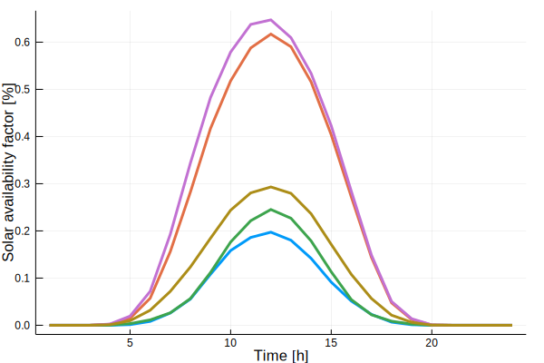

Clustering
run_clust() takes the full data and gives a struct with the clustered data as the output.
The input parameter n_clust determines the number of clusters,i.e., representative periods.
Supported clustering methods
The following combinations of clustering method and representations are supported by run_clust:
| Name | method | representation |
|---|---|---|
| k-means clustering | <kmeans> | <centroid> |
| k-means clustering with medoid representation | <kmeans> | <medoid> |
| k-medoids clustering (partitional) | <kmedoids> | <centroid> |
| k-medoids clustering (exact) [requires Gurobi] | <kmedoids_exact> | <centroid> |
| hierarchical clustering with centroid representation | <hierarchical> | <centroid> |
| hierarchical clustering with medoid representation | <hierarchical> | <medoid> |
For use of DTW barycenter averaging (DBA) and k-shape clustering on single-attribute data (e.g. electricity prices), please use branch v0.1-appl_energy-framework-comp.
ClustForOpt.run_clust — Function.run_clust(data::ClustData;norm_op::String="zscore",norm_scope::String="full",method::String="kmeans",representation::String="centroid",n_clust::Int=5,n_init::Int=100,iterations::Int=300,save::String="",attribute_weights::Dict{String,Float64}=Dict{String,Float64}(),get_all_clust_results::Bool=false,kwargs...)normop: "zscore", "01"(not implemented yet) normscope: "full","sequence","hourly" method: "kmeans","kmedoids","kmedoids_exact","hierarchical" representation: "centroid","medoid"
run_clust(data::ClustData,n_clust_ar::Array{Int,1};norm_op::String="zscore",norm_scope::String="full",method::String="kmeans",representation::String="centroid",n_init::Int=100,iterations::Int=300,save::String="",kwargs...)This function is a wrapper function around runclust(). It runs multiple number of clusters k and returns an array of results. normop: "zscore", "01"(not implemented yet) normscope: "full","sequence","hourly" method: "kmeans","kmedoids","kmedoidsexact","hierarchical" representation: "centroid","medoid"
Example running clustering
using ClustForOpt
state="GER_1"
# laod ts-input-data
ts_input_data, = load_timeseries_data("CEP", state; K=365, T=24)
ts_clust_data = run_clust(ts_input_data).best_resultsClustData("GER_1", 5, 24, Dict{String,Array}("solar-germany"=>[-0.0 0.0 … -0.0 -0.0; -0.0 0.0 … -0.0 -0.0; … ; -0.0 0.0 … -0.0 -0.0; -0.0 0.0 … -0.0 -0.0],"wind-germany"=>[0.378721 0.246585 … 0.164578 0.559385; 0.386115 0.23966 … 0.158533 0.562954; … ; 0.390115 0.228019 … 0.163222 0.542646; 0.390754 0.230585 … 0.161556 0.539708],"el_demand-germany"=>[49549.6 50862.6 … 47605.3 55563.3; 46942.0 48809.2 … 45245.1 53317.4; … ; 55028.7 61155.3 … 53206.3 64711.3; 51300.8 55861.0 … 49447.9 59709.6]), [61.0, 106.0, 88.0, 45.0, 65.0], Dict{String,Array}("solar-germany"=>[0.0, 0.0, 0.0, 0.0, 0.0, 0.0, 0.0, 0.0, 0.0, 0.0 … 0.0, 0.0, 0.0, 0.0, 0.0, 0.0, 0.0, 0.0, 0.0, 0.0],"wind-germany"=>[0.0, 0.0, 0.0, 0.0, 0.0, 0.0, 0.0, 0.0, 0.0, 0.0 … 0.0, 0.0, 0.0, 0.0, 0.0, 0.0, 0.0, 0.0, 0.0, 0.0],"el_demand-germany"=>[0.0, 0.0, 0.0, 0.0, 0.0, 0.0, 0.0, 0.0, 0.0, 0.0 … 0.0, 0.0, 0.0, 0.0, 0.0, 0.0, 0.0, 0.0, 0.0, 0.0]), Dict{String,Array}("solar-germany"=>[1.0, 1.0, 1.0, 1.0, 1.0, 1.0, 1.0, 1.0, 1.0, 1.0 … 1.0, 1.0, 1.0, 1.0, 1.0, 1.0, 1.0, 1.0, 1.0, 1.0],"wind-germany"=>[1.0, 1.0, 1.0, 1.0, 1.0, 1.0, 1.0, 1.0, 1.0, 1.0 … 1.0, 1.0, 1.0, 1.0, 1.0, 1.0, 1.0, 1.0, 1.0, 1.0],"el_demand-germany"=>[1.0, 1.0, 1.0, 1.0, 1.0, 1.0, 1.0, 1.0, 1.0, 1.0 … 1.0, 1.0, 1.0, 1.0, 1.0, 1.0, 1.0, 1.0, 1.0, 1.0]))